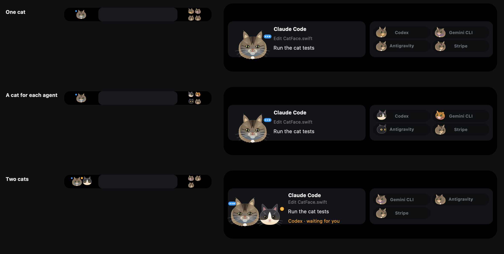
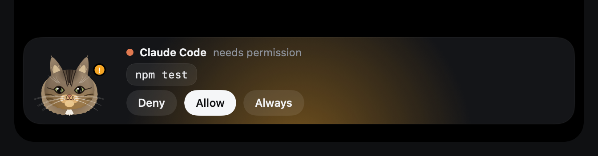
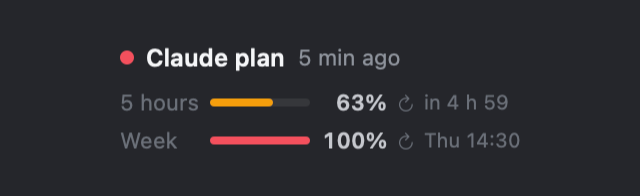
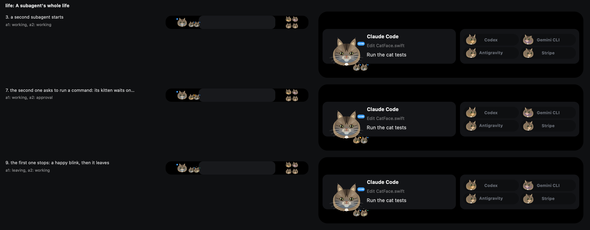
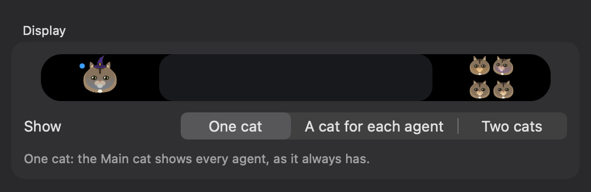
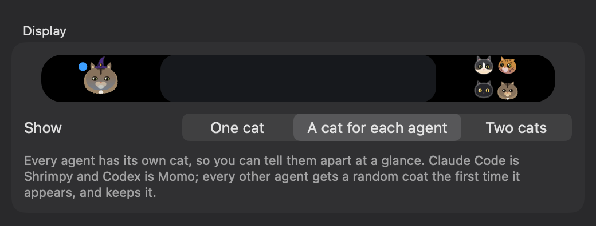
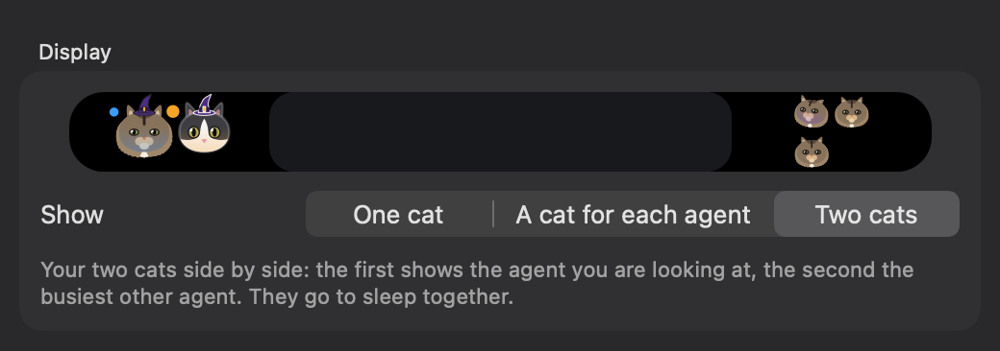
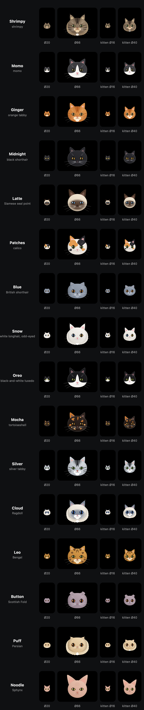

Two cats that live in your notch
Shrimpy and Momo keep an eye on your AI coding agents from your Mac's notch, or from the top of your screen on Windows and Linux. Watch Claude Code, Codex, Cursor, Gemini CLI and Antigravity work, approve a permission request, drop a file, chat with Claude, all without leaving what you're doing.
Try a tester buildView on GitHub
Shrimpy
Momo
Pick a coat for Shrimpy, the left cat.
What it does
Every picture below is drawn by NotchMeow's own code, from its own views.

Every agent at a glance
The island sits in the notch and opens when something needs you. Each agent has its own pill, and the cat shows what the agent in focus is doing: thinking, working, searching, waiting for you, finished, or in trouble.

Approve from the notch
Allow, Deny or Always for a Claude Code permission request, and answer its questions, with one click. NotchMeow never approves anything without your click.

Your plan, at a glance
On the Mac, once you turn it on in Settings, a small gauge shows how much of your Claude plan's five-hour and weekly limits you have used, and when each resets.

Subagents become kittens
When Claude Code starts a subagent, a kitten of its coat appears beside the parent's cat, shows what the subagent is doing, and leaves with a happy blink when it stops.
One cat, a cat for each agent, or two cats
Pick how the cats share the island. One cat shows every agent. A cat for each agent gives each agent its own coat, so you can tell them apart at a glance. Two cats shows the agent you are looking at and the busiest other one, side by side.
One cat

A cat for each agent

Two cats


Sixteen coats, two motion styles, six personality sliders
Shrimpy and Momo are the defaults, and fourteen more coats from the same blueprint are a pick away in Settings, from Ginger and Midnight to Noodle. The sheet scrolls: it shows each coat at the sizes the island uses, and its kitten.
- Drop a file on the notchto ask a question about it.
- Chatwith Claude, or on the Mac with Gemini, OpenAI or a local model, using your own keys.
- See what Claude is editingeach edit shows up with its added and removed lines, and opens as a diff.
- Keyboard shortcutson the Mac: open the chat, jump to a waiting alert, switch pills, mute.
- A cat on your desktopOn the Mac, drag the big cat out of the notch and it lives on your desktop, watches the pointer and flies back when an agent needs you. Off until you turn it on.
How the cats react
Each button puts the big cat into a state the notch shows, and the line under the cat says what that state means there.
Claude Code is busy with your task: the cat shows dots while it edits and runs commands.
Nothing on.
Private by design
No telemetry
NotchMeow sends nothing home. It calls only the services you set up yourself.
No account
There is nothing to sign up for. NotchMeow never signs in to Claude.ai and never reads Claude Code's credentials.
Keys stay in the keychain
Your API keys live in the macOS Keychain, the Windows Credential Manager or the Linux Secret Service, never in a file.
If NotchMeow isn't running, its hook exits at once, so Claude Code is never blocked. Before it writes to ~/.claude/settings.json, it backs the file up and shows you the diff. And this page makes no request to any other site, sets no cookies and has no analytics.
Get it
Tester builds by invitation
Version 0.9.x for macOS, Windows and Linux, checked on the author's own machines first and handed out as private files. How to install one, and what to try.
The public release
Coming: 1.0.0 on a release page on GitHub, a Mac disk image that is not notarized by Apple (open it once with Open Anyway in System Settings → Privacy & Security).
Build from source
macOS 15 with Xcode, or Tauri on Windows and Linux. The README has the steps.
Credits
NotchMeow is a fork of Coucou by Louis Raillé (MIT): the engine, the island and the integrations come from it. The cats, the name, the icons and the sounds are NotchMeow's own. Built by Lorenz Tazan with Claude Code. NotchMeow is an independent fork, not affiliated with or endorsed by Coucou or its author.
- The sound credits: every CC0 clip NotchMeow's sounds are built from, with its maker and its page.
- NotchMeow's own assets: the name, Shrimpy and Momo, the icons and the sounds are all rights reserved, and the CC0 clips stay CC0.
- The code's licence: MIT, which keeps the original copyright notice.